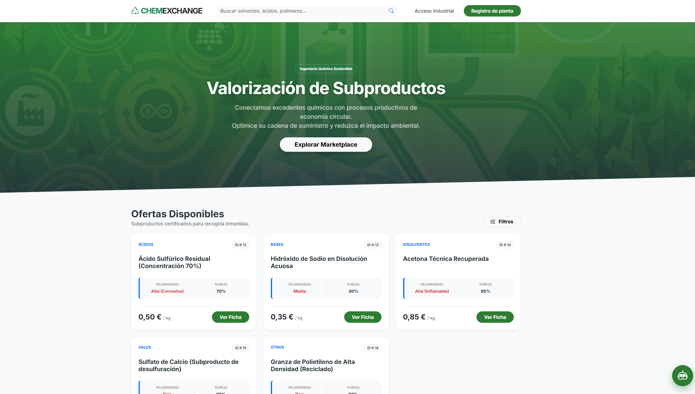
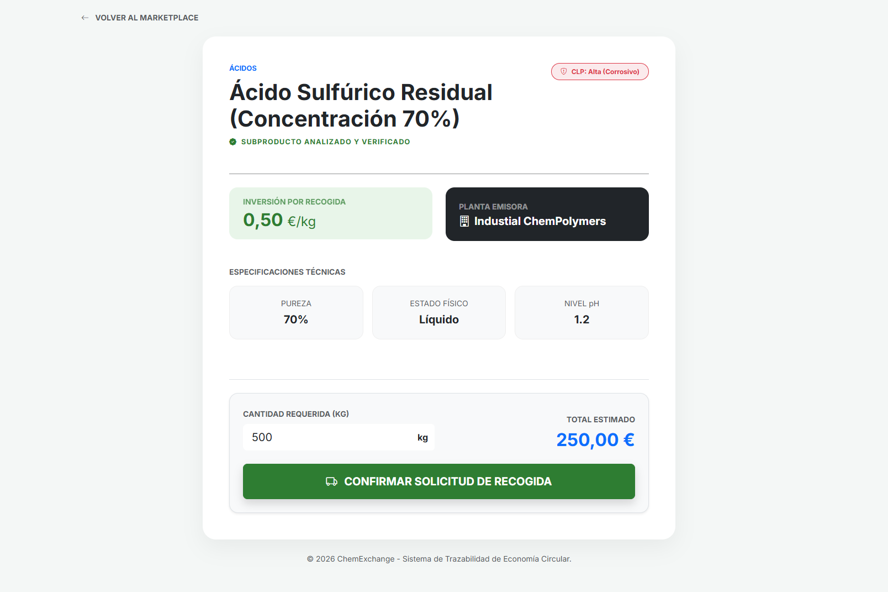
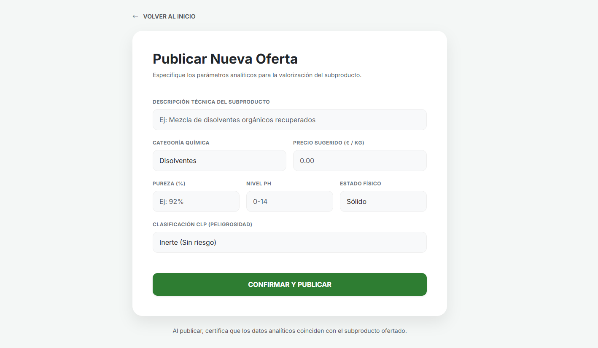
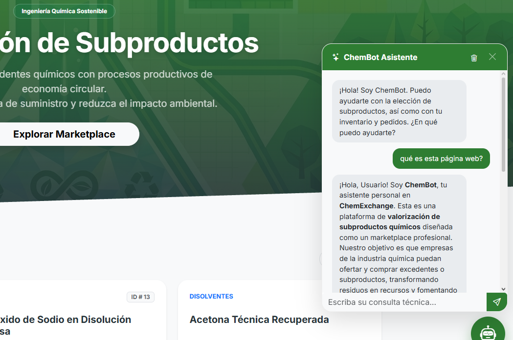
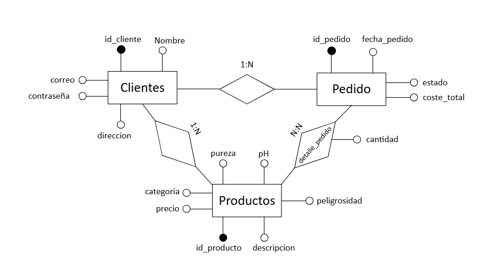

Diseño e implementación de ChemExchange: plataforma web transaccional orientada al intercambio seguro de subproductos químicos y residuos valorizables, combinando persistencia relacional en 3FN, control de transporte ADR y un asistente conversacional RAG acoplado a base de datos.




Ecosistema integral ChemExchange: exploración multi-filtro → verificación analítica → alta de corrientes → consultoría contextual RAG.
Latencia Servidor
17 ms
Pruebas DevTools (595 ms bajo Slow 4G forzado)
Base de Datos
3FN InnoDB
Transacciones ACID y CASCADE selectivo
Asistente Inteligente
RAG Live
Gemini Flash con contexto SQL en tiempo real
Ciberseguridad
Bcrypt PDO
Prepared statements anti-SQLi y hashes asimétricos
En la industria química, la frontera legal entre residuo y subproducto determina la viabilidad de una transacción. ChemExchange implementa en su lógica de backend las directrices de la Ley 7/2022 y los reglamentos europeos de seguridad de sustancias.
Aplica a corrientes secundarias integradas en el proceso que poseen certeza de uso posterior sin transformación no convencional. El catálogo digital ofrece a la empresa emisora la garantía contractual de destino inmediato, evitando que el material reciba un código LER y sea catalogado legalmente como residuo.
· Reintroducción directa como materia prima secundaria
· Supresión de tasas e intermediarios de eliminación
· Máxima jerarquía de gestión europea (Pirámide invertida)
Aplica a materiales que ya fueron tipificados como residuo con código LER. ChemExchange acredita los requisitos para declarar el Fin de Condición de Residuo al documentar técnicamente la existencia de demanda de mercado, especificaciones analíticas (pH, pureza) y cumplimiento del Reglamento REACH.
· Generación automática de orden de recogida ADR
· Etiquetado de riesgo bajo Reglamento CLP
· Trazabilidad documental para auditorías ambientales
Diseño del esquema de base de datos relacional sobre el motor InnoDB de MySQL, normalizado en Tercera Forma Normal (3FN) para eliminar redundancias operativas y parametrizado para garantizar la trazabilidad analítica de las sustancias químicas.

Estructura relacional: Clientes (1:N) Productos, Clientes (1:N) Pedidos y relación asociativa detalle_pedido (N:M).
La tabla asociativa detalle_pedido implementa la restricción ON DELETE CASCADE ligada al pedido global para suprimir registros huérfanos, mientras que ON DELETE RESTRICT sobre id_producto bloquea la eliminación física de cualquier compuesto con transacciones activas o pendientes.
Verificado mediante tests de penetración con cargas condicionales maliciosas (ej. ' OR '1'='1). Las consultas parametrizadas mediante la interfaz PDO tratan las entradas como literales planos, mientras que los middlewares de cabecera bloquean por redirección forzada cualquier acceso no autenticado por URL a paneles de gestión.
Protección de credenciales mediante el estándar criptográfico password_hash(PASSWORD_DEFAULT), almacenando hashes irreversibles de longitud fija (255 caracteres) en la base de datos y validando los inicios de sesión mediante password_verify().
Para evitar las alucinaciones típicas de los modelos de lenguaje en entornos químicos críticos, el backend de PHP intercepta la consulta y recupera en vivo el inventario relacional de MySQL antes de comunicarse con la API de Google Gemini vía cURL.
El servidor local asla la clave API y enriquece el payload con el stock real antes de comunicarse con la nube.
Todas las consultas utilizan sentencias preparadas nativas en PDO contra inyecciones SQL (verificadas con vectores de ataque como ' OR '1'='1). Las contraseñas se almacenan mediante hashes criptográficos asimétricos con password_hash(Bcrypt).
Para mitigar el consumo de tokens y latencias de red, el controlador implementa un algoritmo de ventana deslizante con array_slice($_SESSION['chat_history'], -10), preservando el hilo de la conversación sin sobrecargar el payload JSON.
Al confirmarse una transacción, el script comprobante.php genera una orden de recogida en formato de impresión que integra automáticamente la dirección de planta del emisor, clasificación de riesgo CLP y directivas del Acuerdo ADR para transportistas.
Simulación cuantitativa de una transacción anual de 100 t/año de diclorometano residual (85% pureza) intercambiado entre una planta de síntesis farmacéutica (Emisor) y una fábrica de pinturas y barnices (Receptor), evaluado con tarifas oficiales de COGERSA y datos de mercado de IMARC.
Retorno Neto Anual
+85.891 €/año
Ahorro en Aprovisionamiento
-80.000 €/año
Emisiones Evitadas Netas
573 t CO₂eq